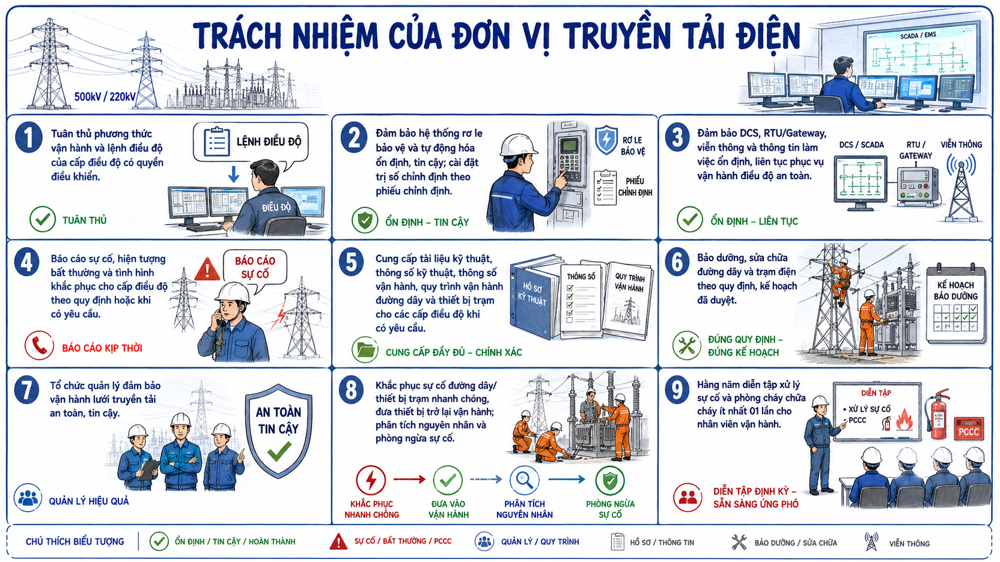

← Quay lại danh mục câu hỏi
CÂU HỎI 48
Câu 48: Trách nhiệm của Đơn vị truyền tải điện

Hình 48: Sơ đồ minh họa (nếu có)
Trả lời:
Trách nhiệm của Đơn vị truyền tải điện:
- Tuân thủ phương thức vận hành, lệnh điều độ của cấp điều độ có quyền điều khiển trong quá trình vận hành lưới điện truyền tải.
- Đảm bảo hoạt động ổn định, tin cậy của hệ thống rơ le bảo vệ và tự động hóa trong phạm vi quản lý. Cài đặt trị số chỉnh định cho hệ thống rơ le bảo vệ và tự động trong phạm vi quản lý theo phiếu chỉnh định của cấp điều độ có quyền điều khiển.
- Đảm bảo hệ thống DCS, thiết bị đầu cuối RTU/Gateway và hệ thống viễn thông, thông tin thuộc phạm vi quản lý làm việc ổn định, tin cậy và liên tục phục vụ vận hành, điều độ an toàn hệ thống điện quốc gia.
- Báo cáo sự cố, hiện tượng bất thường của thiết bị và tình hình khắc phục sự cố cho cấp điều độ có quyền điều khiển theo quy định hoặc khi có yêu cầu.
- Cung cấp tài liệu kỹ thuật, thông số kỹ thuật, thông số vận hành, quy trình vận hành đường dây, thiết bị trong trạm thuộc quyền quản lý cho các cấp điều độ để thực hiện tính toán chế độ vận hành, phối hợp cài đặt rơ le bảo vệ và tự động trên toàn hệ thống điện quốc gia khi có yêu cầu.
- Thực hiện công tác bảo dưỡng, sửa chữa đường dây, trạm điện theo đúng quy định và kế hoạch đã được duyệt.
- Tổ chức công tác quản lý đảm bảo vận hành lưới điện truyền tải an toàn và tin cậy.
- Tổ chức thực hiện công tác khắc phục sự cố đường dây hoặc thiết bị điện tại trạm điện đảm bảo nhanh chóng đưa thiết bị vào vận hành trở lại trong thời gian ngắn nhất. Chủ động phân tích, xác định nguyên nhân và thực hiện các biện pháp phòng ngừa sự cố.
- Hàng năm, tổ chức diễn tập xử lý sự cố và diễn tập phòng cháy, chữa cháy cho các nhân viên vận hành ít nhất 01 lần.